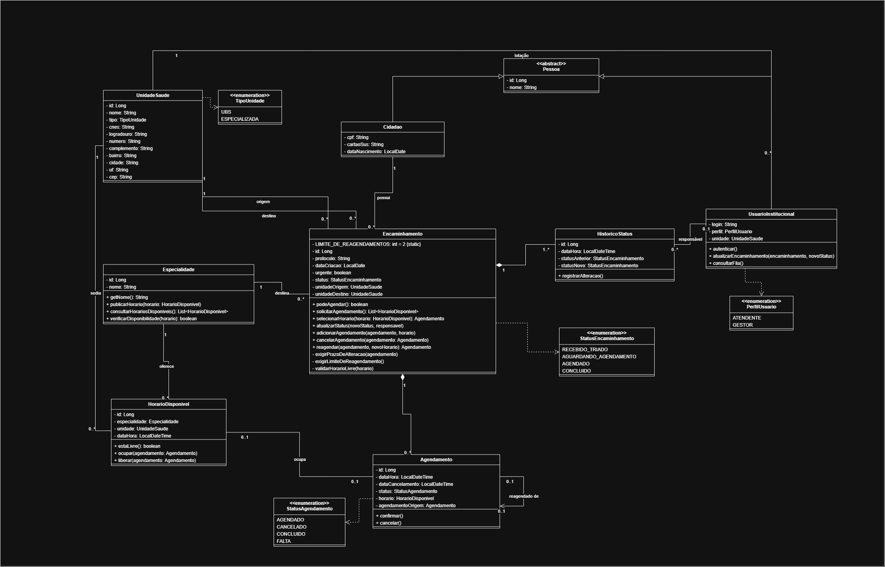
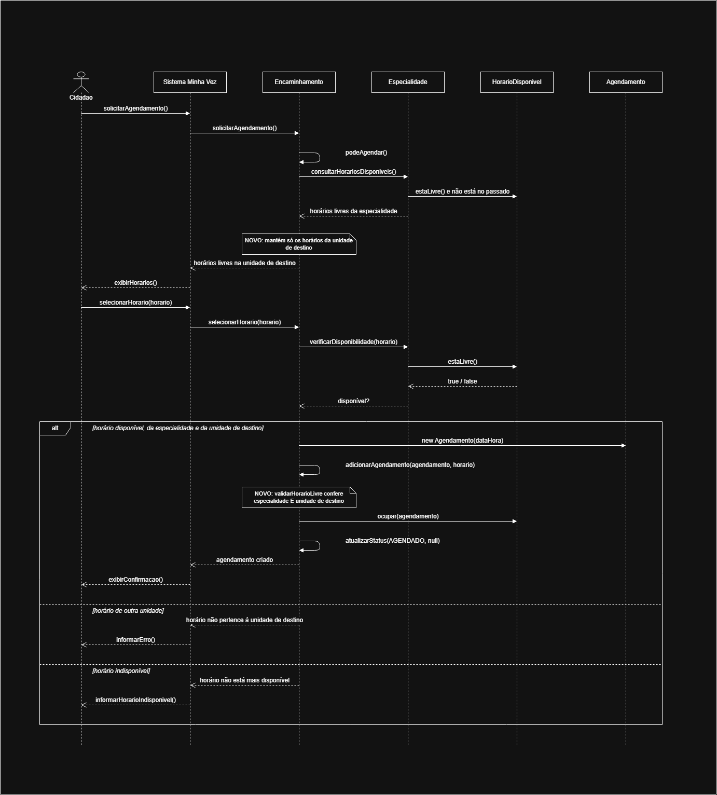
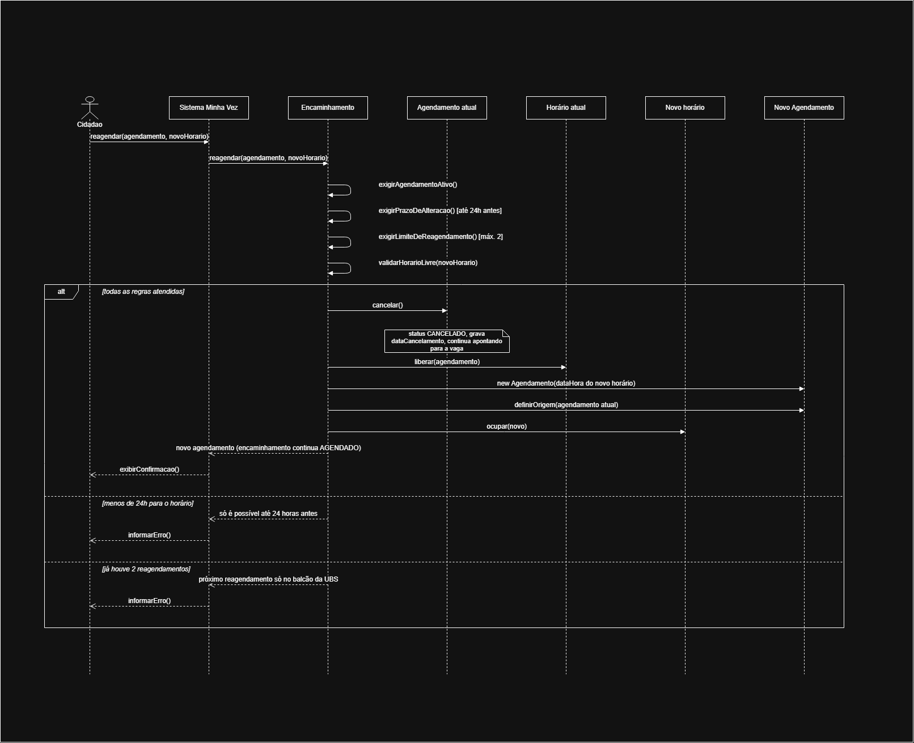
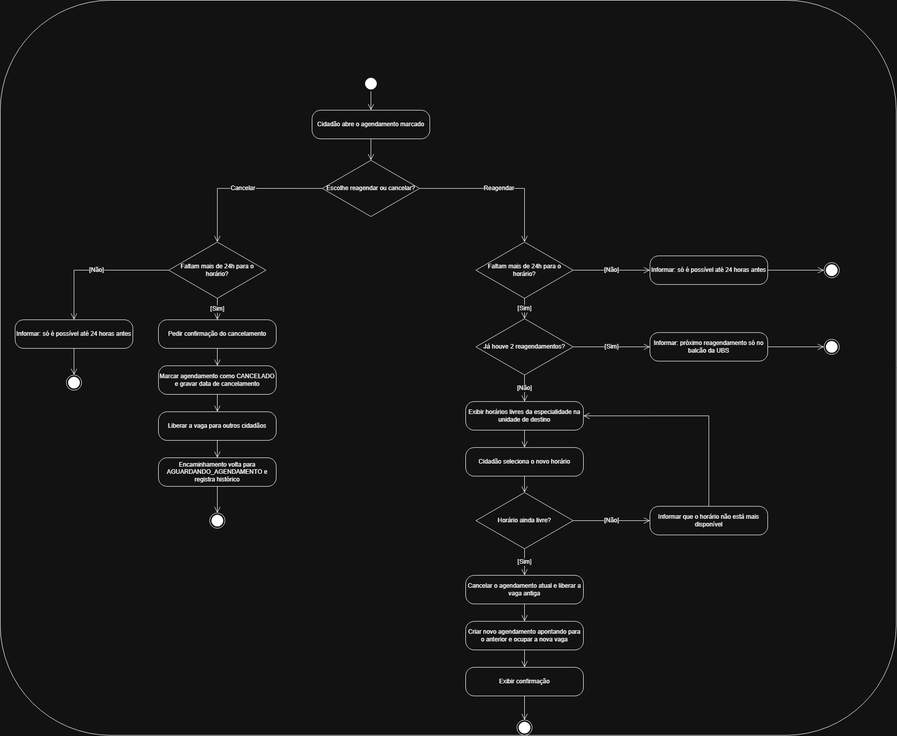
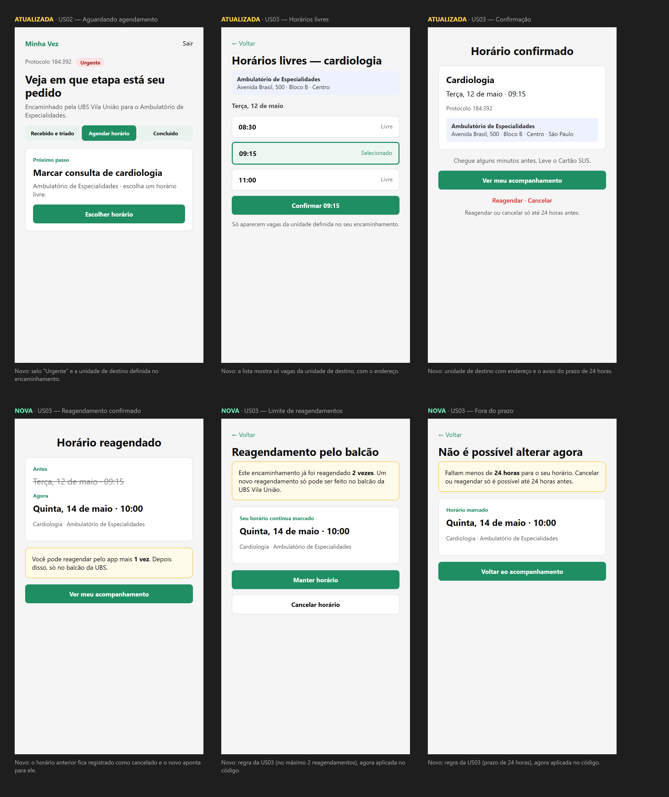
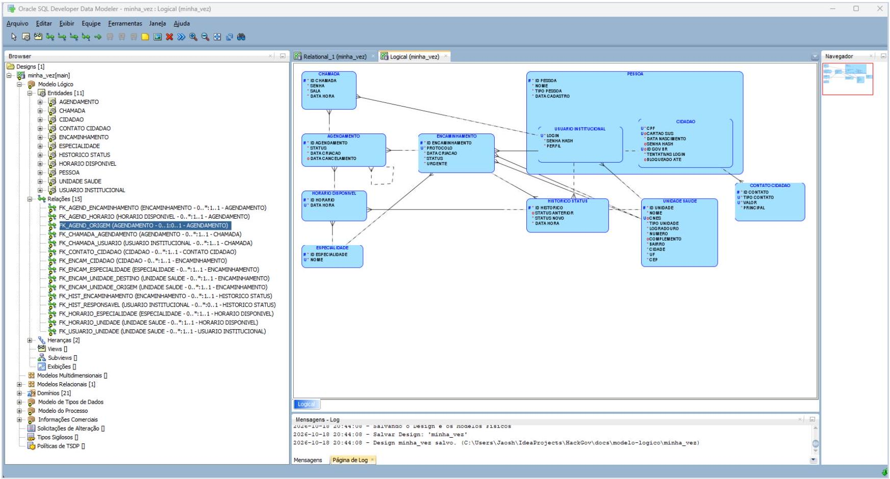
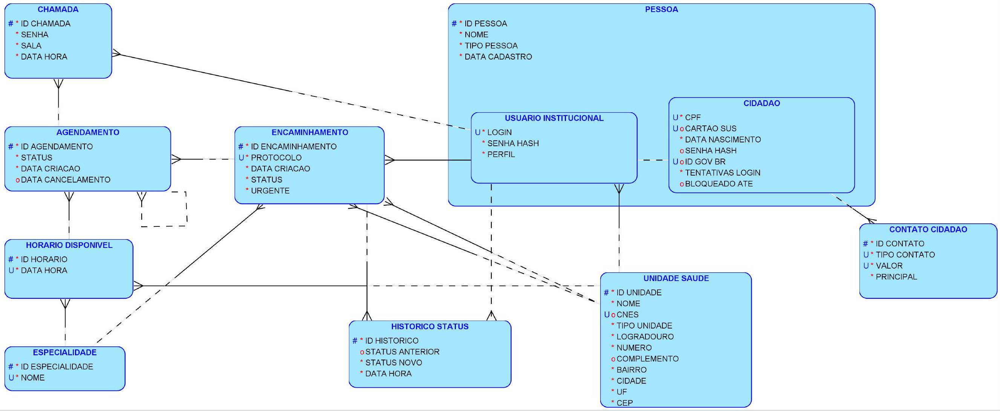
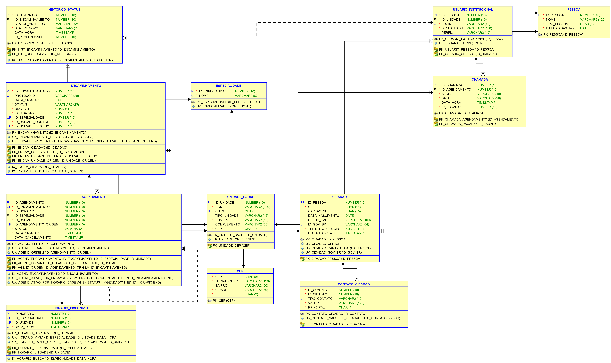

Minha Vez · Fase 3 · deck do vídeo
15 cenas na ordem do vídeo, com tudo visível. Clique numa figura para ver os enquadramentos da câmera. Mostrar regiões da câmera · esconder
Fase 3
É hora de armazenar os dados.
Modelo lógico, formas normais, modelo físico e script SQL do agendamento de encaminhamentos da UBS para a atenção especializada.
Silverio PereiraRM 566968

Cristo MendesRM 567403
Thethê AndradeRM 568305
JunqueiraRM 566906

Martins AraújoRM 575032
O que mudou desde a Fase 2
Onde a Fase 2 parouFluxo do cidadão modelado em UML, prototipado no Figma e com o primeiro recorte do domínio em Java.
Ao desenhar o banco, a modelagem dos dados expôs regras da US03 que o código ainda não aplicava.
As regras da US03 agora no código
- Especialidade
- Cardiologia
- Origem
- UBS Centro
- Destino
- Ambulatório de Especialidades
- 30/10 14:00Ambulatório de Especialidadesaparece
- 31/10 09:00Ambulatório de Especialidadesaparece
- 30/10 14:00Ambulatório Lesteoutra unidade
- 1
Só vê e só agenda vagas da unidade de destinoA unidade é definida no encaminhamento.
- 2
Reagendar cancela o atual e cria um novoO novo agendamento aponta para o cancelado.
- 3
Cancelar ou reagendar só até 24 h antesDepois disso, o horário fica mantido.
- 4
No máximo 2 reagendamentosO terceiro, só no balcão da UBS.
Testes passando, demo rodando
RegrasDoEncaminhamentoTest ├─ terceiroReagendamentoFicaNoBalcao() ├─ nascimentoNuloOuFuturoEhRecusado() ├─ reagendarCriaOutroAgendamentoEMantemOHorarioCancelado() ├─ criacaoDoEncaminhamentoEntraNoHistorico() └─ cancelarComMenosDe24HorasEhRecusado() 5 tests successful0 tests failed
Protocolo: MV-2026-0001Horários livres na unidade de destino: 2Vaga de outra unidade visível: falseReagendado para: 31/10/2026 às 09:00Agendamentos no encaminhamento: 2Anterior ficou: CANCELADONovo aponta para o cancelado: trueHorário cancelado ainda registrado: trueErro esperado: O horário não pertence à unidade de destino do encaminhamento.
O domínio ainda roda em memória. Gravar no banco é a próxima etapa.
UML revisado contra o código




Mantidos sem mudança: casos de uso e atividades de agendar. As funcionalidades são as mesmas.
3 telas atualizadas, 3 telas novas

3 atualizadasselo Urgente, só vagas da unidade de destino e aviso de 24 h
3 novashorário reagendado, limite de 2 reagendamentos e fora do prazo
Nomes, datas, protocolo e endereço nas telas são cenário ilustrativo.
O modelo lógico no Data Modeler

FerramentaOracle SQL Developer Data Modeler
Banco de destinoOracle Database 21c
Notação Barker# identificador, * obrigatório, o opcional, U único
O modelo, contado pela ferramenta
As decisões do modelo lógico
- 1EspecializaçãoPESSOA dividida em CIDADAO e USUARIO_INSTITUCIONAL
- 2AgregaçãoAGENDAMENTO liga o encaminhamento ao horário
- 3Autorrelacionamentoo reagendamento aponta para o horário anterior
- 4Atributo multivaloradoo contato do cidadão virou CONTATO_CIDADAO
- 5Atributo compostoo endereço da unidade, em atributos atômicos
- 6Fora do bancoCID, laudo e prontuário: menos dano num vazamento

Se tudo ficasse numa tabela só
01Inserção
Não dá para cadastrar um cidadão sem encaminhamento nem publicar uma vaga que ninguém reservou.
02Exclusão
Apagar o único pedido de José (P-003) leva junto o cadastro dele e o endereço do Amb. Leste.
03Alteração
Maria troca de celular e cada pedido dela precisa mudar. Esquecer um deixa duas versões.
Dados fictícios, só para ilustrar a tabela única.
Da tabela única até a BCNF
A dependência transitiva pelo CEP
ID_UNIDADE→CEP→LOGRADOURO, BAIRRO, CIDADE, UFdependem do CEP, não da unidade
UNIDADE_SAUDE Parte 2
- ID_UNIDADE PK
- NOME
- TIPO_UNIDADE
- CNES
- LOGRADOURO
- NUMERO
- COMPLEMENTO
- BAIRRO
- CIDADE
- UF
- CEP
UNIDADE_SAUDE ajustada
- ID_UNIDADE PK
- NOME
- TIPO_UNIDADE
- CNES
- NUMERO
- COMPLEMENTO
- CEP FK
CEP nova
- CEP PK
- LOGRADOURO
- BAIRRO
- CIDADE
- UF
Mantido de propósitoSTATUS do encaminhamento, STATUS_ANTERIOR do histórico, especialidade e unidade no agendamento. A consistência é garantida pela aplicação e pelo banco.
12 tabelas, com tipos e chaves
- 1Tipos em cada colunaNUMBER, VARCHAR2, CHAR, DATE, TIMESTAMP
- 2Relacionamento vira colunacada linha do lógico é uma chave estrangeira
- 3Especialização em 3 tabelasas três com o mesmo ID_PESSOA
- 4Tabela nova: CEPvinda da normalização da Parte 3
- 11 → 12 tabelase de 17 para 18 chaves estrangeiras

O banco garante as regras da US03
CREATE TABLE AGENDAMENTO ( ID_ENCAMINHAMENTO NUMBER(10) NOT NULL, ID_HORARIO NUMBER(10) NOT NULL, ID_ESPECIALIDADE NUMBER(10) NOT NULL, ID_UNIDADE NUMBER(10) NOT NULL, STATUS VARCHAR2(10) NOT NULL, ... -- só aceita horário da mesma especialidade e unidade CONSTRAINT FK_AGEND_ENCAMINHAMENTO FOREIGN KEY (ID_ENCAMINHAMENTO, ID_ESPECIALIDADE, ID_UNIDADE) REFERENCES ENCAMINHAMENTO (..., ID_UNIDADE_DESTINO), CONSTRAINT FK_AGEND_HORARIO FOREIGN KEY (ID_HORARIO, ID_ESPECIALIDADE, ID_UNIDADE) REFERENCES HORARIO_DISPONIVEL (...)); -- a mesma vaga não tem dois agendamentos ativosCREATE UNIQUE INDEX UX_AGEND_ATIVO_POR_HORARIO ON AGENDAMENTO (CASE WHEN STATUS = 'AGENDADO' THEN ID_HORARIO END);
- PRIMARY KEY
- 12
- FOREIGN KEY
- 18
- UNIQUE
- 13
- CHECK
- 14
- INDEX
- 7
De um domínio em memória
para um banco desenhado, normalizado
e pronto para o Java gravar.
github.com/FIAP-Dream-Team/HackGov